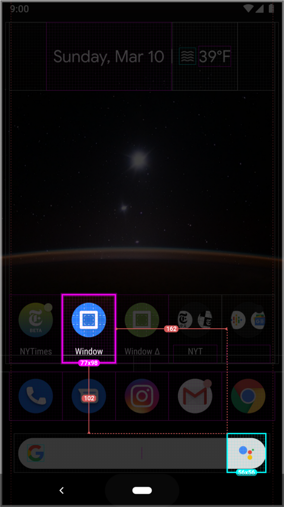
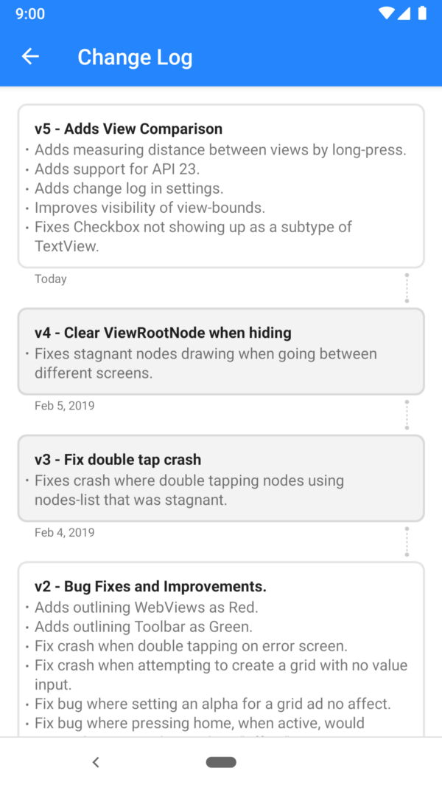

A new update is rolling out to the play store! Direct Download Link.


Long Press to Compare, Change Log, and API 23 support!
A new update is rolling out to the play store! Direct Download Link.

Senior Software Engineer • @NYTimes